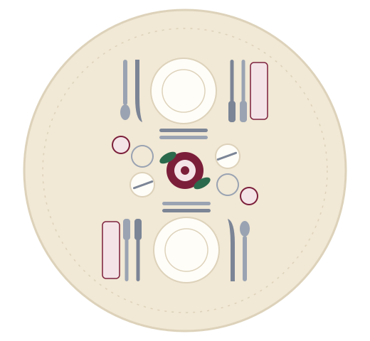

A beginner's guide for UA students
Eat well, talk well, and leave a great impression.
Interviews, networking events, and employer dinners often happen over a meal. This guide shows you what to do before, during, and after, so you can focus on the conversation instead of the forks.

Why does a meal matter?
An employer who takes you to lunch is not testing whether you know your salad fork from your dinner fork. They are watching how you treat people, how calm you are under mild pressure, and whether you can hold a conversation while eating.
One etiquette writer puts it this way: how you carry yourself at a meal is a small preview of how you carry yourself at work. The good news is that the rules are few, and you can learn them in an afternoon.
Sources: The US at Work (Kaye).
Follow the meal from start to finish
Before the meal
Research your host, pick or accept the restaurant, and plan your arrival.
Read the prep guide →At the table
Decode the place setting, handle your napkin, order wisely, and eat tidily.
See the table diagram →Conversation & follow-up
Make small talk, know when to talk business, and say thanks afterward.
Learn the flow →If you remember only five things
- Arrive early and prepared.Look up the person you are meeting and get there before they do.
- Silence your phone.Put it away before you sit. Your attention is the best compliment.
- Follow your host's lead.On what to order, when to start, how fast to eat, and when to talk business.
- Eat small and stay tidy.Small bites, outside-in utensils, and kindness to the people serving you.
- Say thank you, then follow through.Send a short note and do what you promised during the meal.
Sources: Business Management Daily, NBC News (Dizik), The US at Work (Kaye).
Watch: dining during a job interview
Take it further
Ready to practice? Take the ten-question self-check quiz, then tell us what you learned in the survey.
Looking for real events? Check UA Career Services (opens in a new tab) for workshops and employer events, and visit the University of Arizona homepage (opens in a new tab) for campus news.